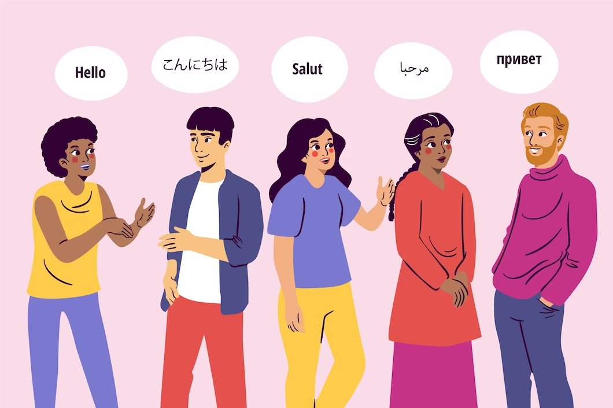
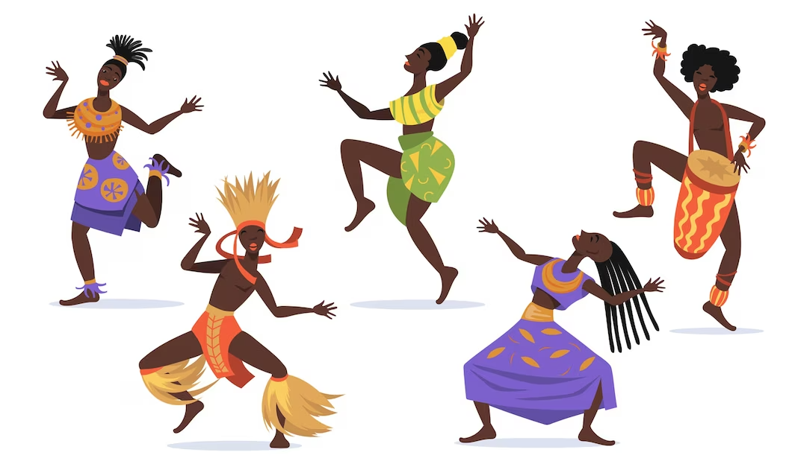
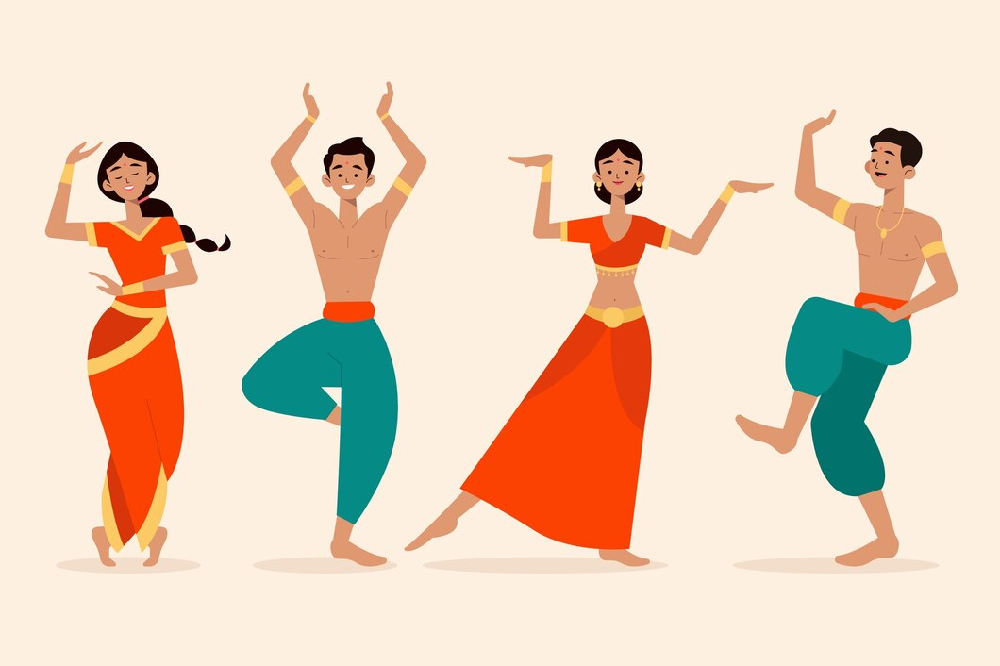

Menyelami Keanekaragaman Budaya di Dunia
Dalam dunia yang semakin terhubung, penting untuk memahami dan
menghargai keanekaragaman budaya. Budaya mencakup berbagai aspek,
ulai dari makanan, pakaian, bahasa, hingga perayaan budaya. Namun,
keanekaragaman budaya bukan hanya tentang perbedaan,
tetapi juga tentang bagaimana budaya-budaya ini berdampingan dan
saling memengaruhi. Memahami keberagaman budaya dapat membantu kita
menjadi lebih toleran dan terbuka terhadap orang-orang dari latar belakang
budaya yang berbeda.
Menjelajahi Dunia Melalui Mata Mereka
Kami berbicara dengan beberapa orang asing yang telah tinggal
di negara yang berbeda dan menanyakan tentang pengalaman mereka
dalam menjalani kehidupan di tempat baru. Dia mempertahankan tradisi
Meksiko di rumahnya, mengajarkan anak-anaknya berbicara dalam bahasa Spanyol,
dan merayakan perayaan-perayaan budaya Meksiko.
Dia juga belajar cara menghormati adat istiadat Jepang,
termasuk berpartisipasi dalam upacara teh.
Kota Bandung dialiri dua sungai utama, yaitu Sungai Cikapundung dan Sungai Citarum
beserta anak-anak sungainya yang pada umumnya mengalir ke arah selatan dan bertemu di
Sungai Citarum. Dengan kondisi yang demikian, Bandung selatan sangat rentan terhadap
masalah banjir terutama pada musim hujan.

Membangun Jembatan Antarbudaya
Cerita inspiratif ini tentang sebuah komunitas di wilayah pedesaan
yang berkomitmen untuk mempromosikan pemahaman dan perdamaian antarbudaya.
Mereka mengadakan festival budaya tahunan yang menampilkan makanan, tarian, dan musik dari
berbagai budaya yang ada di komunitas tersebut.
Ini tidak hanya memperkuat hubungan antara anggota komunitas, tetapi juga membuka pintu
untuk dialog dan pemahaman yang lebih baik.
Hal ini membantu orang-orang dari berbagai latar belakang untuk saling belajar dan memahami.
Guru Sufi dan Kuil Hindu

Berada di jalur utama Bandung-Lembang, Farm House menjadi objek wisata yang tidak
pernah sepi pengunjung. Selain karena letaknya strategis, kawasan ini juga
menghadirkan nuansa wisata khas Eropa. Semua itu diterapkan dalam bentuk spot swafoto
Instagramable.
Simfoni Kesatuan di Cape Town

Di Cape Town, Afrika Selatan, ada orkestra simfoni yang terdiri dari pemain musik dari
berbagai latar belakang budaya. Mereka menggabungkan instrumen musik dari berbagai tradisi
budaya, menciptakan suara yang unik dan mendalam.
Mereka juga melakukan konser amal untuk mengumpulkan dana bagi pendidikan musik bagi
anak-anak yang kurang beruntung.
Orkestra simfoni ini menjadi contoh keberagaman budaya yang harmonis di tengah negara
yang memiliki sejarah panjang konflik rasial.